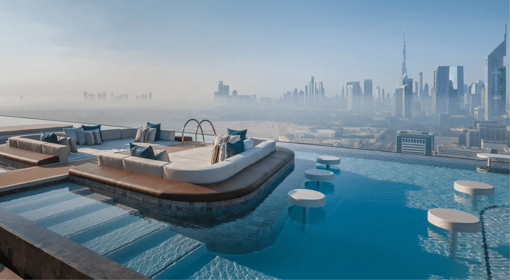
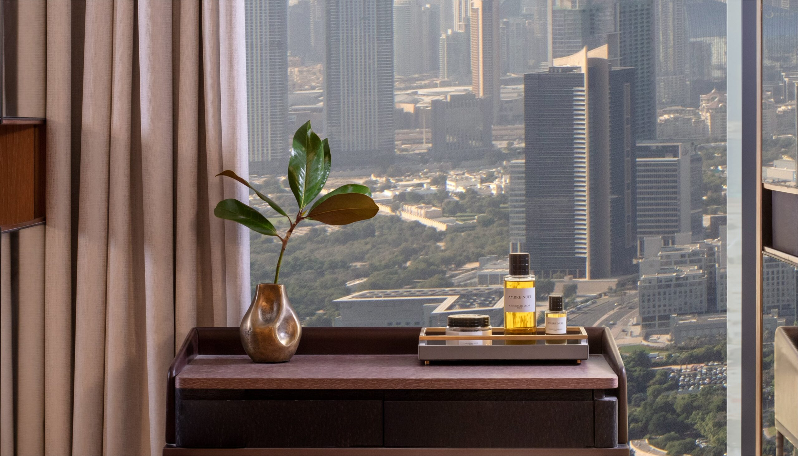
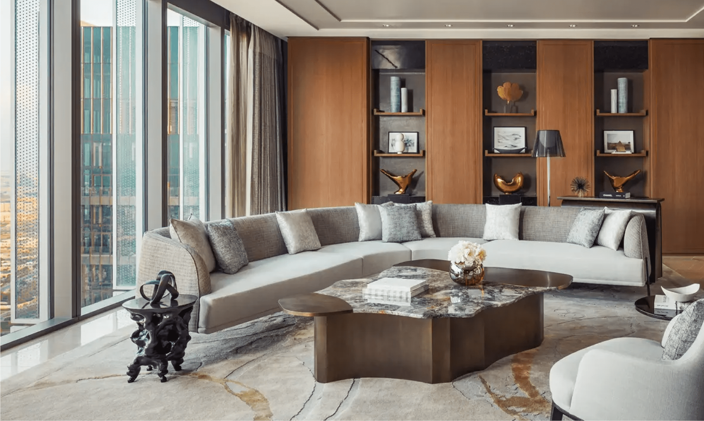
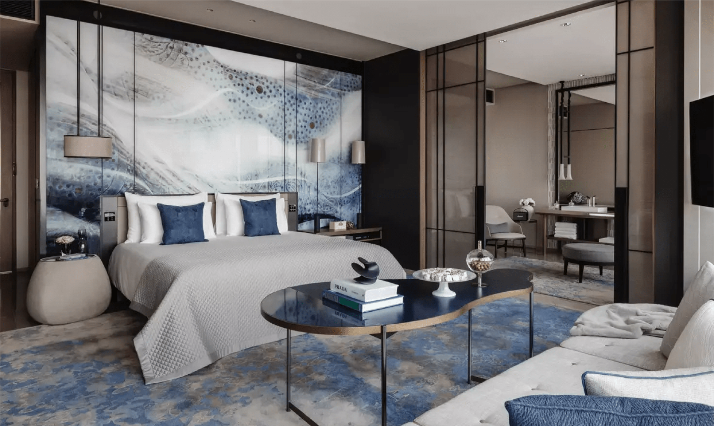
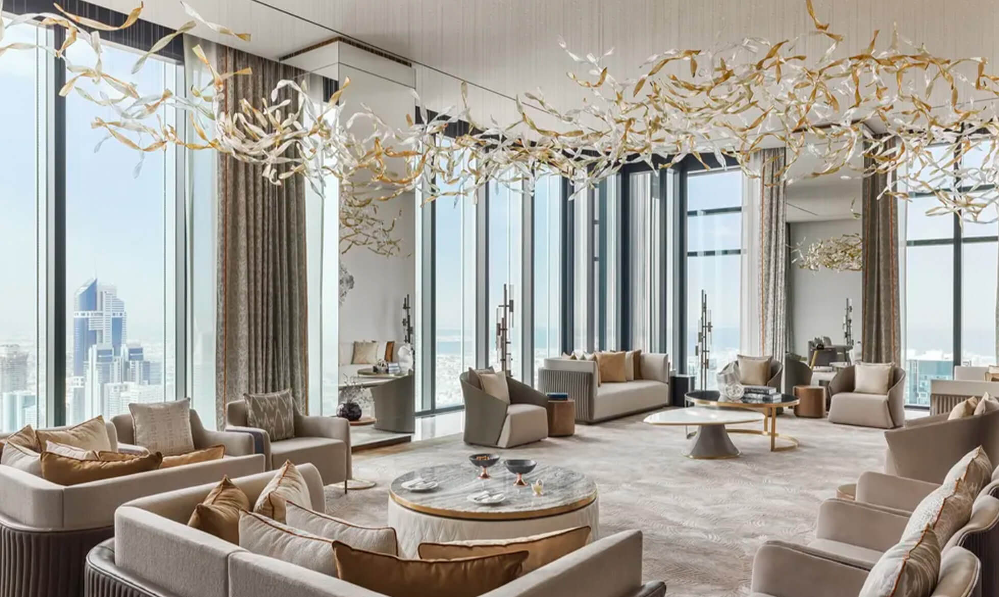

Favorite Hotels
One&Only One Za'abeel is the Dubai hotel I would pull when a client wants the city to feel big, polished, and still genuinely luxurious.
There are plenty of flashy hotels in Dubai, but not all of them feel like a place you want to stay in for a few days and actually enjoy. One&Only One Za'abeel is different. It has the skyline views, the sense of occasion, and the recognizable Dubai energy, but it also has enough depth in the rooms, dining, wellness, and overall setup to make it a very usable luxury hotel instead of just a dramatic arrival.
What makes it unique
It is one of the few city hotels in Dubai that feels genuinely strong for a real multi-night stay.
Some skyline hotels are great for one dramatic night. One&Only One Za'abeel goes further than that. The dining is deep enough, the wellness is strong enough, and the room product is good enough that the hotel can genuinely carry a longer luxury stay for clients who want the city instead of the beach.
Stay
229 guest rooms and suites
Good range from elevated entry-level rooms to serious signature suites and Villa One.
Dining
A real lineup, not just one nice restaurant
Tapasake, La Dame de Pic, Andaliman, Culinara, Maison Devoille, and more built into the experience.
Best For
Celebratory Dubai travelers
Ideal for clients who want skyline views, nightlife-adjacent energy, and a hotel they will actually use.
Known For
The Link and the pools
Tapasake Pool, The Garden Pool, and a full wellness layer give the hotel real day-to-day range.



The overall setup
Officially, the hotel has 229 guest rooms and suites inside One Za'abeel, which already puts it in a sweet spot for Dubai. It is large enough to offer real choice, but it still feels like a luxury hotel with a point of view instead of a giant anonymous tower. The Link, suspended between the towers, is part of what gives the whole place its identity and helps the hotel feel more destination-driven than a lot of city properties.
Room types and suite depth
This is one of the reasons I would actually use it. The accommodation lineup has range. The hotel positions the suite program around Urban, Sanctuary, and Creative Suites before moving into larger signature suites and then Villa One, which is the real showpiece.
Villa One is the level that tells you what the hotel is capable of. Officially, it comes with its own cinema, gym, outdoor terrace, and infinity pool, so if a client wants a Dubai stay that can feel almost penthouse-residential, that is the conversation. Even below that level, the hotel still makes sense because the regular room and suite product leans into floor-to-ceiling views and strong layouts rather than trying to rely only on branding.


Restaurants, pools, and what you actually do here
The dining setup is a real strength. Officially, the property leans on a collection of restaurants and bars spread between The Link and The Garden, with names like Tapasake, La Dame de Pic, Andaliman, Culinara, and Maison Devoille already part of the story. That matters because the hotel does not feel like you have one restaurant you tolerate and then leave every night. It feels like a place you can actually build dinners, drinks, and downtime around.
The pool and wellness side is just as important. Tapasake Pool is positioned as the UAE’s longest infinity pool, which gives the hotel that big-view, high-energy Dubai moment. The Garden Pool is the calmer, family-friendlier side of the property. Then you have the Longevity Hub by Clinique La Prairie, which gives the hotel a much stronger wellness layer than the average city luxury stay.
Who it is best for
- Clients who want a statement Dubai hotel without sacrificing polish
- Celebration trips where the hotel itself should feel like part of the event
- Dubai repeaters who want something newer and more current than the older classics
- Travelers who will actually use the dining, pool, and wellness spaces instead of only sleeping there
My honest take
If someone wants Dubai to feel exciting, photogenic, and a little bit elevated beyond the usual “big hotel, big lobby, done” formula, this is one I would use. The suite depth, the dining lineup, and the overall energy make it feel like a real contender, not just another flashy address.